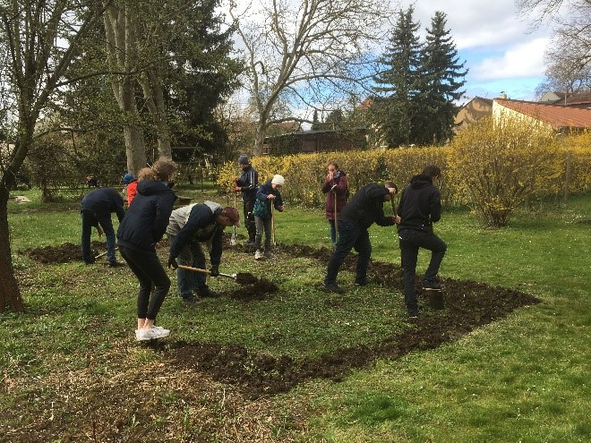
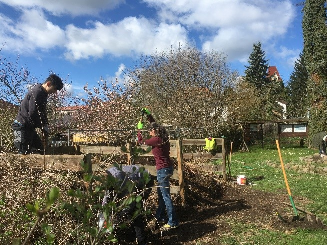
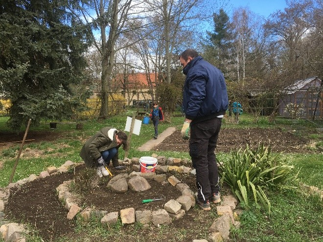

Nach langer Pause war es am 09.04.22 endlich soweit: die Schule hatte Schülerinnen und Schüler, Eltern und Freiwillige eingeladen, den Schulgarten traditionell aus seinem Winterschlaf zu befreien. Viele Helferinnen und Helfer fanden sich trotz anfangs unklarer Wetterlage zusammen und in kürzester Zeit war so viel geschafft!
Die Dahlien wurden eingepflanzt, ein Kartoffelacker angelegt, der Komposter bekam nicht nur eine neue Form, sondern sogar eine Auffahrtsrampe!
Die Kräuterspirale ist wieder bepflanzbar, die Wege dahin stolperfrei begehbar, – und keine Äste hängen den Gartenfreunden dabei mehr ins Gesicht.
Es wurden Beete vom Unkraut befreit und umgeackert, Werkzeug repariert und Zapfen aufgesammelt.
  Sogar eine Frühblüherwiese ist im Ansatz entstanden. Die Schülerinnen und Schüler der Schulgarten – AG können die Wiese nun vollenden.
Zum Abschluss gab es eine kleine Stärkung.